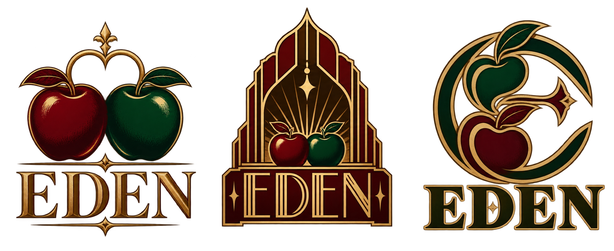
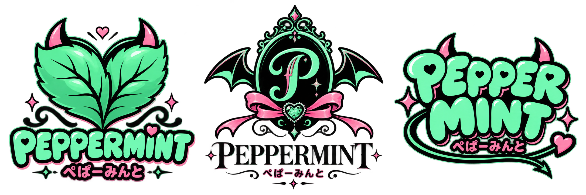
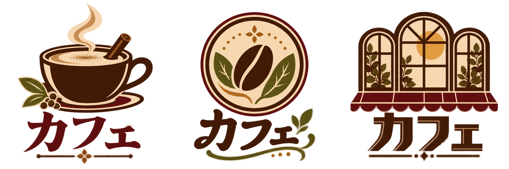

CHAPTER 01 · SHOP LOGO STUDIES
第1章の店舗ロゴ 24案
8店 × 3パターン。各画像は左からA・B・C。
tonari
スミさんの地元シーシャラウンジ。木・深緑のソファ・色違いのトルコ風モザイクランプ。親しみと人のつながり。
A煙がつなぐ手書き文字Bモザイクランプの紋章C隣り合う窓の幾何学
KEMURIKUSA
なるの勤める人気店。焼き菓子のような甘い匂い、オリーブ色の壁と木・真鍮。誠実な職人の店。
A葉と香りの線画BKのモノグラムC洋菓子店風の楕円紋章
EDEN
アダムのダブルアップル専門店。下町、赤と緑の林檎、真鍮・濃緑・赤の重厚な室内。

A赤と緑の双子林檎B楽園の門C林檎とEの紋章
PEPPERMINT／ぺぱーみんと
みんとのコンカフェ。ミント色・ピンクの室内、小悪魔の衣装、SNS向けのポップさ。

A角つきミントハートB小悪魔のリボン紋章Cぷっくりポップ文字
Dr.fookah
問屋街の卸直営店。1階は機材とフレーバー、2階は暗いショールーム。凛の専門性と少し謎めいた香り。
A香りの六角紋章Bdfの技術的モノグラムC香りのボトルの丸紋
C.STATION
南雲会長の大型シーシャチェーン。誰でも入りやすいカフェ的空間、青緑のソファ、大会の旗艦会場。
A集まるCの入口BCSの連結マークC駅のサイン風プレート
カフェ
なるおすすめの小さな喫茶。スパイスラテとハーブティー、午後の日差し、木・赤い庇とソファ。屋号未設定。

AスパイスラテのカップBハーブと珈琲豆の紋章C午後の窓
チョイザップ
みんとおすすめのアプリ入会ジム。ガラス張りの明るい店舗、ライム色・白・グレー。気軽なトレーニング。
A一歩進む矢印B稲妻とCの運動感Cチェックとダンベル